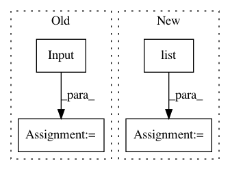

16474aee0c575e615c78d32f2a170c3d7f8f0082,autokeras/graph.py,Graph,produce_model,#Graph#,75
Before Change
def produce_model(self):
input_shape = get_int_tuple(self.model.inputs[0].shape[1:])
input_tensor = Input(shape=tuple(input_shape))
input_id = self.node_to_id[self.model.inputs[0]]
output_id = self.node_to_id[self.model.outputs[0]]
id_to_tensor = {input_id: input_tensor}
q = Queue()
q.put(input_id)
while not q.empty():
u = q.get()
for v, edge_id in self.adj_list[u]:
layer = self.edge_list[edge_id]
if edge_id in self.old_edge_ids:
copied_layer = copy_layer(layer, get_int_tuple(id_to_tensor[u].shape))
temp_tensor = copied_layer(id_to_tensor[u])
else:
temp_tensor = layer(id_to_tensor[u])
id_to_tensor[v] = temp_tensor
After Change
layer = self.edge_list[edge_id]
if isinstance(layer, WeightedAdd):
edge_input_tensor = list(map(lambda x: id_to_tensor[x], self.edge_id_to_input_ids[edge_id]))
else:
edge_input_tensor = id_to_tensor[u]
if edge_id in self.old_edge_ids:
In pattern: SUPERPATTERN
Frequency: 4
Non-data size: 4
Instances
Project Name: jhfjhfj1/autokeras
Commit Name: 16474aee0c575e615c78d32f2a170c3d7f8f0082
Time: 2017-12-30
Author: jhfjhfj1@gmail.com
File Name: autokeras/graph.py
Class Name: Graph
Method Name: produce_model
Project Name: hachmannlab/chemml
Commit Name: e044a1cdb727c33092f01f1fe44108cff8b06f9d
Time: 2018-03-21
Author: mojtabah@buffalo.edu
File Name: cheml/wrappers/database/sklearn_db.py
Class Name: Inputs
Method Name: Inputs_1
Project Name: hachmannlab/chemml
Commit Name: e044a1cdb727c33092f01f1fe44108cff8b06f9d
Time: 2018-03-21
Author: mojtabah@buffalo.edu
File Name: cheml/wrappers/database/sklearn_db.py
Class Name: Inputs
Method Name: Inputs_1